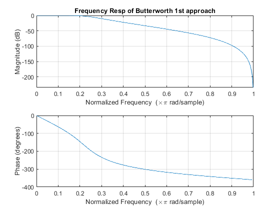
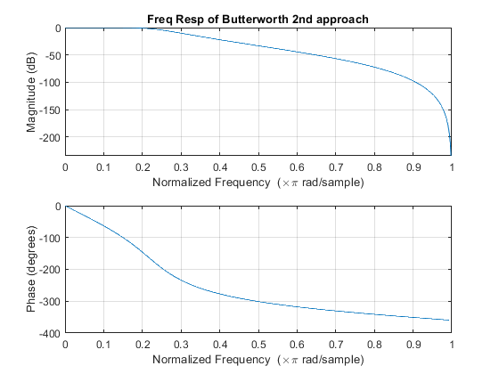
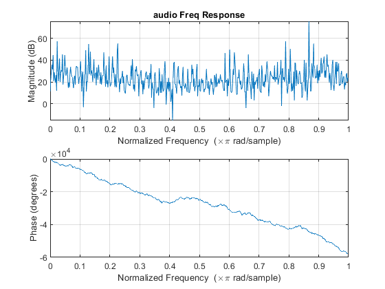
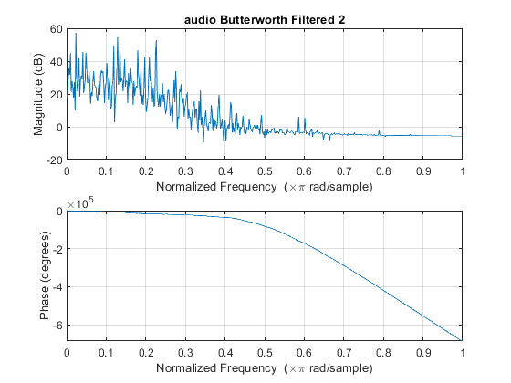

Digital Signal Processing MATLAB HW3 - q2
Professor: Dr. Sheikhzadeh Author: Maryam Barazande - 9723016 E-mail: maryambarazande7@gmail.com University: Amirkabir University of Technology
Contents
Clear recent data
clear; close all; clc;
A. Bilinear transformation
part 1
% define parameters wp = 0.2*pi; ws = 0.4*pi; Rp = 1; As = 20; T = 2; Fs = 1/T OmegaP = (2/T)*tan(wp/2); OmegaS = (2/T)*tan(ws/2); [cs,ds] = afd_butt(OmegaP,OmegaS,Rp,As); %butterworth filter design in continuous domain [b1,a1] = bilinear(cs,ds,Fs); %butterworth continuous to discrete figure(1); freqz(b1,a1); title('Frequency Resp of Butterworth 1st approach');
Fs =
0.5000
*** Butterworth Filter Order = 4
 B. Normalized Butterworth
part 2
OmegaP = (2/T)*tan(wp/2); OmegaS = (2/T)*tan(ws/2); N =ceil((log10((10^(Rp/10)-1)/(10^(As/10)-1)))/(2*log10(OmegaP/OmegaS))); OmegaC = OmegaP/((10^(Rp/10)-1)^(1/(2*N))); wn = (2/pi)*atan((OmegaC*T)/2); [b2,a2] = butter(N,wn); %butterworth direct design in discrete domain figure(2); freqz(b2,a2); title('Freq Resp of Butterworth 2nd approach');
C.Filtering
part 3
[audio , Fs] = audioread('HW3_Q2_multi_tone.wav') ; audio = (audio)' ; %transposing audio file figure(3); freqz(audio); title('audio Freq Response'); filtered_audio1 = filter(b1,a1,audio); %first methof filter on audio file figure(4); freqz(filtered_audio1); title('audio Butterworth Filtered 1'); filtered_audio2 = filter(b2,a2,audio); %second method filter on audio file figure(5); freqz(filtered_audio2); title('audio Butterworth Filtered 2'); 
Butterworth Function
function [b,a] = u_buttap(N,Omegac) %%copy butterworth design function from the book [z,p,k] = buttap(N); p = p*Omegac; k = k*Omegac^N; B = real(poly(z)); b0 = k; b = k*B; a = real(poly(p)); end function [b,a] = afd_butt(Wp,Ws,Rp,As) if Wp <= 0 error('Passband edge must be larger than 0') end if Ws <= Wp error('Stopband edge must be larger than Passband edge') end if (Rp <= 0) || (As < 0) error('PB ripple and/or SB attenuation ust be larger than 0') end N = ceil((log10((10^(Rp/10)-1)/(10^(As/10)-1)))/(2*log10(Wp/Ws))); fprintf('\n*** Butterworth Filter Order = %2.0f \n',N) ; OmegaC = Wp/((10^(Rp/10)-1)^(1/(2*N))); [b,a]=u_buttap(N,OmegaC); end